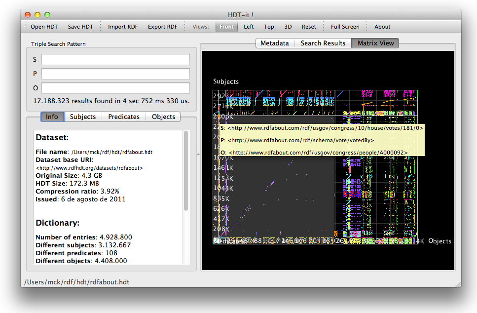
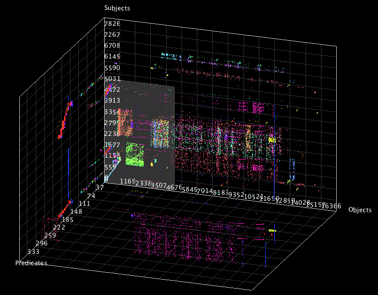

HDT (Header, Dictionary, Triples) is a binary representation for RDF that compresses big datasets to save space while maintaining search and browse operations. This makes it an ideal format for storing and sharing RDF datasets.
HDT-it! is a tool that allows generating and consuming HDT files. As an example, the tool allows to search basic graph patterns, and shows a global 3D Matrix of the RDF distribution to understand the organization of the information.
This document teaches how to use the tool to create and browse HDT files. There is also a screencast demonstrating visually all the features of HDT-it available at the RDF HDT Web page.
To install HDT-it! on Microsoft Windows, download the binary package for Windows from the RDF-HDT Download page. Uncompress the zip file using any appropriate software (Such as IZarc) to any folder of your choice. To launch the application, just double click on HDT-it.exe. You might find usefull to have a shortcut on your desktop. To do so, drag the hdt-it.exe file to your desktop using the right button of the mouse, and select "Create shortcut".
Should you want to uninstall HDT-it!, just delete the folder on your hard drive.
To install HDT-it! on MacOSX, download the binary package for MacOSX from RDF-HDT Download page. Launch the dmg file and drag the HDT-it! app to your Applications folder. Then you can launch HDT-it! the same way as any MacOSX application. You can create a shortcut to it by droping the app from the Applications folder to your dock.
Note that HDT-it! is a Universal binary, and can run on 32 and 64 bit Intel platforms, but cannot run on PowerPC.
Should you want to uninstall HDT-it!, just drag the App from the Applications folder to the Trash.
To install HDT-it! on Linux, download the binary package for Linux from RDF-HDT Download page. Untar the package on your home (tar jxfv HDT-it-0.9beta-linux.tbz2) and launch it using the HDT-it.sh script (./HDT-it.sh). The package contains all the needed libraries: namely Qt 4.7.
After opening HDT-it, you can see the following view:
The first step when using HDT-it is loading a dataset. It uses the HDT format to keep all the information in a compact but at the same time accessible manner.
If you have any dataset in HDT, you can load it using the "Open HDT" option from the toolbar. The instalation distribution package contains several example datasets that you can play with. You can also download bigger datasets from the Dataweb page.
You also probably want to load your own dataset. HDT-it! is able to load RDF data in several well-known RDF formats (NTriples, N3, Turtle and RDF-XML) and convert it to HDT. To import data, select Import RDF and follow the instructions. You need to specify some information, namely:
The process of importing the RDF file will take a while. We recommend using "NTriples" as input format since it can be processed statement by statement therefore using fewer RAM memory. For really big datasets, you may need a powerfull computer with a high amount of RAM memory, since the conversion process needs to construct intermediate data structures. In these cases, we recommend using the commandline tools available in HDT-lib on a server machine. Then the resulting HDT file can be loaded using a more modest computer since it is already compressed and ready to be used.
This option allows saving the HDT file. It is specially useful when you just imported a RDF file and want to keep an HDT version for faster loading and consumption.
You can export any HDT search back to RDF to consume it using traditional tools or loading it to any RDF database. Just select export and by default the tool will serialize it to NTriples. If you want to export the whole dataset, just left empty all the fields in the triple search pattern.
On the top left, you can insert a triple search pattern to filter the results. It allows searching for a specific subject, predicate or object. Any field left blank means "any", so the default empty option will show all triples. In order to simplify the typing task, options are proposed as the user types thanks to the dictionary.
On the bottom left part of the window, all the information available about the dataset is shown. Namely the size of the original dataset and the compressed HDT version (to highlight the savings of using HDT). It also shows the details about the dictionary (the number of entries in the dictionary and the number of triples). It is also interesting to see the relative size of the dictionary against the triples.
Also on the bottom left you can select any of the components (Subjects, predicates, or objects). It will show a list of all the different elements available. The user can double click on any item to add it to the search box.
The Metadata tab on the top right allows browsing all the information about the HDT's header in plain RDF format.
The Search Results Tab shows the list of all triples that match the specified query in the triple search pattern block. You can double-click on any element to add it to the search pattern box. Also, you can right-click on it and select "Search as Subject/Predicate/Object".
The visualization widget allows the developer to have an overall view of the dataset. It allows understanding the structure of the RDF data.
The matrix view is based on an Adjacency Matrix. The dictionary part of the HDT assigns numerical ID to each of the different subject, predicate and object. Then, each RDF triple can be referred as a triple of numerical IDs, such as 234,5,3425. This ID can be interpreted as a point in a 3-Dimensional space, therefore it can be plotted as a point in a 3D graph axis. The matrix view is just a scatter-plot of all the triples of the dataset.
To better see the details, you can rotate the view by holding the mouse's left button, or pan using the right one. To increase/decrease the zoom the mouse wheel shall be used. There are three predefined views: Top, Left, and 3D, that can be selected on the top bar. You can also select reset to go back to the initial view.
In order to understand the information underlying each area of the visualization, the application reveals information about the nearest triple under the cursor when the user hovers the mouse over each area. Note that this feature is only available for the Front view.
HDT was possible thanks to: